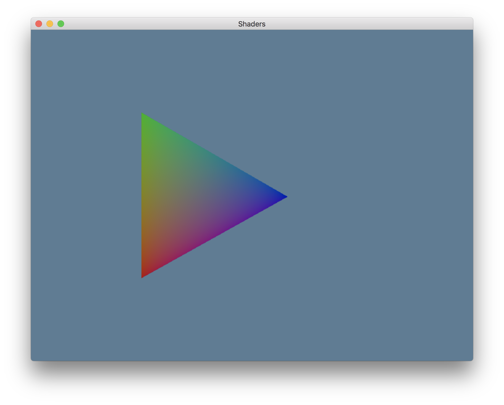

Shaders
I know you've been itching for a short lesson, so let's do a short lesson.
This time we're talking more about Shaders. What are shaders? We just don't know.
GLSL and SPIRV
Technically you can use any number of shader languages with gfx-hal as long as
they can compile to SPIRV. There's many options, and even an LLVM/SPIRV
converter (really), so you could
potentially use a very wide range of options.
For now now we're using a slightly special variant of GLSL, which stands for "open Graphics Library Shader Language", be cause it's technically the official language for OpenGL, not Vulkan. Still, everyone already knew GLSL when Vulkan came out, and it's actually quite good at what it does, so they kept the textual format and just specified how to compile it to a new binary format.
The shaderc-rs crate that we're using compiles the textual GLSL into the
binary SPIRV for us. More precisely, the shaderc-rs crate's build.rs file
downloads the source of the shaderc C++ program and builds that, then puts
those binaries deep in your target/ directory, then when you call the crate it
invokes that program to do the actual compilation. And it fails if the binaries
aren't there. The crate itself doesn't know how to do any compilation at all.
If you think that sounds crazy, you're right. People are working on better solutions, top men, I assure you, but until then this is the best system we've got.
Now there's a whole lot that can be said about GLSL. You can seriously write books and blogs and demo site after demo site after demo site after demo site for just GLSL.
We'll cover some introduction level GLSL in this lesson, and it's fairly straight forward so I don't think we'll need to specifically focus on it too much later on. It's a "based on C" language with minimal extensibility, so you can learn all the limits of the language itself fairly fast.
However, even once you quickly pick up all the rules of the language, you should still read the books and blogs and sites and things like that because they teach you how to actually apply those simple rules. Like the difference between learning how to play chess and learning to be good at playing chess.
Version
The first line of all your shaders will generally be
#version 450
There's technically a whole lot of GLSL versions, because each release of OpenGL
has a GLSL that goes with it, but since we're not really using OpenGL, we just
pretend we're using version 450 since that's what shaderc understands.
Inputs and Outputs
Next you generally want to specify your inputs and outputs.
In normal GLSL you don't have to specify a layout value for each input and output, but for the GLSL that we want to compile to SPIRV you are required to give a layout location for each. The general format is
layout (location = INDEX) DIRECTION TYPE NAME;
- The
INDEXvalues are just integer values. They're basically arbitrary, but your Rust code and GLSL code must all agree on whatever you pick.- With a Vertex shader, the
AttributeDescdetermines the locations for passing CPU side data into into GLSL data at the start of the process. - With a Fragment shader, the
SubpassDescdetermines the locations for fragment outputs becoming framebuffer data at the end of the process. - Between shaders the locations and variable outputs from one stage need to match the locations and names of the next stage any time you want to pass data between rendering stages.
- There's a (rather small) limit on how many location slots you're allowed, and if you use a struct type it can consume more than one slot. The Khronos wiki has some more about the rules here if you want to know the exact details. I don't expect any of our early lessons to hit these limits.
- With a Vertex shader, the
- The
DIRECTIONis a keyword: one ofin,out, oruniform. Technically there are other things you could put here but they're aliases for one of those three so let's stick to the basics. Aninvalue comes from a previous stage (or the vertex buffer data, for the Vertex Shader), and anoutvalue goes to the next stage (or the framebuffer, for the Fragment Shader). Auniformis a special kind of read-only value that we'll get to a little farther down the page. - The
TYPEis a variable type, using C style names, so it's stuff likefloat,int, anduint, notf32,i32, andu32. There's alsovecNwhere N is 2, 3, or 4 if you want a float vector, and you can have integer vectors and such as well. You can even declare structs using the C style where the block of fields is written{ type1 field1; type2 field2; ... }. - The
NAMEis just a name for the variable. Usually variable names are camelCase with GLSL code that you find in the wild, but snake_case is fine too.
In GLSL you'd normally have access to a few magical values that you can read and
write from, but not all of that translates cleanly with the shaderc compiler.
In our case, the thing that we need to be the most aware of is that instead of
writing to a magical and undeclared gl_Position value during the vertex shader
to determine a vertex's on-screen position, we need to declare and use a special
output like this:
layout (location = 0) out gl_PerVertex {
vec4 gl_Position;
};
Functions
Your GLSL can have any number of functions that you like, declared in the C style where the output is on the left, then the function names and arguments.
At minimum each shader needs an "entry point", as you may recall from the
pipeline declaration we did. By tradition it's just called main, and that's
probably good enough so we'll go with that in our shaders.
Final Note
Just saying, in a normal project you'd probably want to have your shader code in separate files, not directly as string constants. If you use a file extension like .glsl, or maybe .vert and .frag, then your editor will probably have a mode for syntax highlighting and other support for the GLSL format. That's a lot better than a string literal. Somewhere in your Rust code you use the include_str! macro, like this:
# #![allow(unused_variables)] #fn main() { static VERT_SRC: &'static str = include_str!("dwarf.vert"); static FRAG_SRC: &'static str = include_str!("dwarf.frag"); #}
And then that's how you'll have your shader source available.
Please understand that I'm using embedded string literals just because it's easiest for example purposes to have each example be a single file at a time.
Adding A Vertex Attribute For Color
So let's add a second attribute to our vertex data. We'll add an attribute for color. Make a fancy rainbow triangle.
Update Shader Code
First we update our shaders to use the new color attribute. A full color output is of course RGBA (vec4), but as input we'll just give RGB and then let the fragment shader add that A=1.0 in its output.
So our input locations are 0 (position) and 1 (color), and our output
locations are also 0 (the magical gl_Position) and 1 (frag_color for the
fragment shader). The fact that the position information is location 0 for both
inputs and outputs isn't special, you could swap it around if you wanted. Like
with the previous lesson, our fragment shader just promotes the 2D input into a
flat 3D output (which is actually a vec4, and I'll get to why that is in
the lesson on coordinate spaces).
The other line of main, saying frag_color = color; might look a little
silly, but there's a lot of magic wrapped up in that shorthand. It's not a
direct copy of the data, it's what makes that interpolation happen when more
than one fragment is generated by a vertex. If we wanted to have a direct copy
without interpolation we could specify the flat keyword on the output here
(eg: layout (location = 1) flat out vec3 frag_color;). In that case, each
fragment will use the vertex shader outputs of a particular vertex element (the
spec calls it the "provoking
index"). Since
integer values can't be interpolated, you actually must specify flat with
integers that pass between shader stages.
# #![allow(unused_variables)] #fn main() { pub const VERTEX_SOURCE: &str = "#version 450 layout (location = 0) in vec2 position; layout (location = 1) in vec3 color; layout (location = 0) out gl_PerVertex { vec4 gl_Position; }; layout (location = 1) out vec3 frag_color; void main() { gl_Position = vec4(position, 0.0, 1.0); frag_color = color; }"; #}
For our fragment shader, we accept a single input, with the exact same
location as the output from the vertex shader. That's how the system knows to
make them match. (In some older GLSL versions you also could match up variables
by name, but SPIRV only goes by location.) This means that we actually don't
have a location 0 input for our fragment shader, and that's totally fine. Our
output is at location 0 (matching out SubpassDesc) vec4 (which is "RGBA",
since it'll be treated as a color). We'll sensibly call it color. We just
promote the RGB color into an RGBA color by giving it an alpha of 1.0 ("fully
opaque").
# #![allow(unused_variables)] #fn main() { pub const FRAGMENT_SOURCE: &str = "#version 450 layout (location = 1) in vec3 frag_color; layout (location = 0) out vec4 color; void main() { color = vec4(frag_color,1.0); }"; #}
Make Triangle Produce The New Data Format
Next we'll add a method to our Triangle type so that it can give us the
positions interleaved with some color data. We'll just have one corner be red,
one be green, and one blue.
# #![allow(unused_variables)] #fn main() { pub fn vertex_attributes(self) -> [f32; 3 * (2 + 3)] { let [[a, b], [c, d], [e, f]] = self.points; [ a, b, 1.0, 0.0, 0.0, // red c, d, 0.0, 1.0, 0.0, // green e, f, 0.0, 0.0, 1.0, // blue ] } #}
Create A Pipeline With More Attributes
Now we want to support the color attribute in our create_pipeline function.
That's pretty easy, we just change how the the vertex_buffer and attributes
values are defined.
vertex_buffersneeds to have a biggerstridethan before, because the stride between elements is now "five floats" instead of the previous "two floats". We'll also cast theusizeto theElemStridetype alias instead ofu32. It's the same type, but it lets future readers know that we probably knew what we were doing (but only probably).attributesneeds an entire secondAttributeDescentry to describe the color data. The location is easy enough to understand, as is the binding. The element format is nowRgb32Float, since this is three floats, and the offset is the sum of the previous attributes up to this point.
# #![allow(unused_variables)] #fn main() { let vertex_buffers: Vec<VertexBufferDesc> = vec![VertexBufferDesc { binding: 0, stride: (size_of::<f32>() * 5) as ElemStride, rate: 0, }]; let position_attribute = AttributeDesc { location: 0, binding: 0, element: Element { format: Format::Rg32Float, offset: 0, }, }; let color_attribute = AttributeDesc { location: 1, binding: 0, element: Element { format: Format::Rgb32Float, offset: (size_of::<f32>() * 2) as ElemOffset, }, }; let attributes: Vec<AttributeDesc> = vec![position_attribute, color_attribute]; #}
This setup, with [(position, color), (position, color), ..] is called
"interleaved" data. You can also have non-interleaved data by laying out all the
positions and then all the colors, and so on. Then you adjust your stride and
offset value to match that. We'll use interleaved data just because I
personally think it's easier to think about, and even the Khronos
wiki
doesn't take a clear stance either way.
Colors!
That's pretty much it. Didn't I promise that eventually it'd get easier to enhance the program? That was pretty easy.
So easy... that we'll keep going and add a little bit more to the lesson.
Push Constants
Last lesson I said that most of the time you don't re-upload vertex data every frame. That's because usually you'd have a single model (an "iconic triangle" if you will) and then you'd tell the shader what animation frame, or position, or global light level, or other detail to use during the drawing without touching the model data directly. It doesn't seem like a big difference right now when there's only 3 vertex entries in one triangle, but if there's thousands of vertex entries, and there's tens of copies of that model that have to show up in the scene, well you'd rather be doing all that math on your GPU (with dozens of ALUs) than on your CPU (with only a handful of ALUs). That's like, the whole point of the GPU after all.
So how do we know about these special global values during a draw call? They get
placed into things called uniforms, that's what the uniform keyword is for
in GLSL. When GLSL was used for OpenGL there were just "uniforms", but with the
introduction of Vulkan now we've got both "Uniform Buffers" (like the old
uniforms) and also "Push Constants" (a fancy new thing). Uniforms get set before
a draw call and then they're a fixed, read-only value for that entire draw call.
No changes per-vertex or per-fragment or anything else. Any shader can access
that uniform, if it's been correctly configured in your pipeline setup.
As I said, push constants are newer, so older 3D books might not mention them if
you pick one up for some light technical reading, but they work the same way as
a uniform buffer. The biggest difference is that push constants can be assumed
to be significantly faster to update (because of where their physical memory is
on the GPU's card), and also they are somewhat easier to use (because there's no
faffing about with buffers), but you only get a very limited amount of push
constant space. With gfx-hal you can only use 128 bytes of push constant
space. The Vulkan spec assures that you have at least that much, and many
cards offer more these days, but currently gfx-hal has no way to ask the
graphics card exactly how much it supports. It's on the TODO list for 0.2.
As a demo of how to use push constants, we'll record a std::time::Instant at
the creation of our HalState and then use the time since that Instant to shift
our triangle towards black.
Add It To Our HalState
We first add an
Instant field to our
HalState and then use Instant::now to get an Instant while we're
initializing our HalState value.
Before we record the command buffer, we'll decide the current time value as an
f32. Please note that f32 is actually a very
bad
way to store time in the long term (that's why Duration has two integer values
instead of a single float value), but it's fine for our short term animation
purposes here.
# #![allow(unused_variables)] #fn main() { // DETERMINE THE TIME DATA let duration = Instant::now().duration_since(self.creation_instant); let time_f32 = duration.as_secs() as f32 + duration.subsec_nanos() as f32 * 1e-9; #}
And just after we bind the vertex buffer, we also push the graphics constant:
# #![allow(unused_variables)] #fn main() { encoder.bind_vertex_buffers(0, buffers); encoder.push_graphics_constants( &self.pipeline_layout, ShaderStageFlags::FRAGMENT, 0, &[time_f32.to_bits()], ); #}
The important part is that we have to remember to adjust our pipeline definition
as well. Remember how the push_constants value was an empty Vec? We need one
entry now (one push constant).
The format of the Vec is pretty easy: You give (ShaderStageFlags, Range)
tuples, with the ShaderStageFlags signifying what stage the push const will
appear in, and the Range specifying what range of that push_graphics_constants
slice we made will be accessed during that stage. Our stage is
ShaderStageFlags::FRAGMENT, and our range is to just use index 0 (which is
0..1 in Rust's Range notation, don't forget).
# #![allow(unused_variables)] #fn main() { let push_constants = vec![(ShaderStageFlags::FRAGMENT, 0..1)]; let layout = unsafe { device .create_pipeline_layout(&descriptor_set_layouts, push_constants) .map_err(|_| "Couldn't create a pipeline layout")? }; #}
Add It To The Shader Code
Adding the push constants to a shader is pretty easy, but there are few rules.
All of your push constants appear in a single block with the special layout
value of push_constant. This block isn't in or out, instead it's
uniform. After that you give a name for the block type, the block itself, and then
the name that we're going to access it under. If you haven't programmed in C
before this, it may seem weird, but they think it's normal. We just have to go
with it.
Since we want a single f32 to be the time, we define it as a block that holds
a single float value (the GLSL equivalent) which we call time. Then we
take push.time (think of it like they're all stored within a global push
struct), do some funny math on that so that it ends up as a 0.0 to 1.0 value
(since color channels are supposed to be in that range), and make a vec4. We can
multiply the vec4 from our time with the vec4 for our frag_color, and it does
a component-wise multiplication (a.x * b.x, a.y * b.y, etc). Then we shove the
result out the door. Bam, now our triangle shifts between black and rainbow.
# #![allow(unused_variables)] #fn main() { pub const FRAGMENT_SOURCE: &str = "#version 450 layout (push_constant) uniform PushConsts { float time; } push; layout (location = 1) in vec3 frag_color; layout (location = 0) out vec4 color; void main() { float time01 = -0.9 * abs(sin(push.time * 0.9)) + 0.9; color = vec4(frag_color,1.0) * vec4(time01,time01,time01,1.0); }"; #}
Uniform Buffers
Like I said, there's a harsh limit on your push constant space. If you want more global data than you can fit into your push constants you need to setup a Uniform Buffer.
However, I also promised to keep this lesson short, and we'll be using uniform buffers soon enough I'm sure, so we won't go into them right now. Knowing about push constants already teaches you about the general idea of uniform data, so we've covered enough to stop here.
